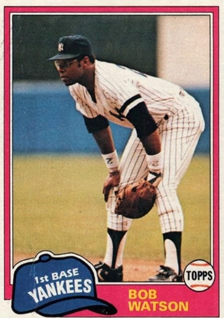

Bob Watson "The Bull"
Career Highlights & Facts
(Facts are AI-generated and may require verification)
- Experienced major league player who enjoyed a career spanning over a decade in the big leagues.
- Featured primarily as a defensive presence at the player position.
- Wore the pinstripes in New York during his career as a valuable veteran contributor.
Read Player Biography
Bob Watson
February 23, 2021
/
in
BioProject - Person
1970s All-Stars
Executives
/
by
admin
This article was written by
Karen DeLuca Stephens
Bob Watson of the Houston Astros touches home plate to score what was widely reported as the 1 millionth run in Major League Baseball history on May 4, 1975. (COURTESY OF THE HOUSTON ASTROS)
Like many youngsters growing up in urban America in the 1950s, Bob Watson’s first at bat was in a game of stickball. He and his younger brother used one of their grandmother’s wooden broom handles as a bat and fashioned a ball from whatever heavy-duty tape they could find. When they decided they needed a greater challenge, they switched their homemade tape ball for a bottle cap. With practice like this, it’s no wonder that when Watson stepped up to home plate for his first turn at bat in a Little League game, the ball looked as large and slow moving as a beach ball. He sent it careening into the outfield for a home run and forged a bond to baseball that sustained him when obstacles he faced years later might have otherwise derailed him.
Robert Jose Watson was born on April 10, 1946, on the east side of Los Angeles, a neighborhood now known as South Central LA. Little is known about his parents, Eddie and Wilma Watson, who divorced in 1947.
1
After their separation, Robert went to live with his maternal grandparents while his younger brother, Arthur Sandoz, was raised by Henry and Ruby Sandoz, good friends and next-door neighbors of his grandparents. His mother remarried sometime later and had three more children, Lawrence, Francis, and Brenda Perkins.
2
In the spring of 1954, when he was eight years old, Robert visited his great-aunt who lived near the Green Meadows Playground where a group of boys were playing baseball. That was the first time he saw an organized game of baseball with bats, real balls, and gloves. His grandmother gave him permission to sign up for Little League, beginning what would become a life-long commitment to baseball. In his first Little League game his coach tried him out behind the plate. He adapted seamlessly to the position, understanding the role of the catcher as the brain center of the game. By the time he was 10 years old, he was as tall as a teenager and played for three different youth teams. His grandmother drove him from game to game in the family’s 1937 Plymouth while he changed uniforms in the back seat of the car. One day she commented that she hoped all his playing would someday be worthwhile. He did not disappoint her. By 13 he was 6 feet tall, weighed 195 pounds, and was hitting baseballs over outfielders’ heads.
By the time Watson had stepped onto the field for his first Little League game, major league baseball had been integrated for seven years. Enthusiasm for baseball in Southern California was bolstered by the 1958 move of the Brooklyn Dodgers to LA and playing ball was ensconced in South Central Los Angeles. An undeniable inspiration for all young Black baseball players of his generation, however, was
Jackie Robinson
and the other Black players who had integrated baseball. Black ball players “stoked the fires of ambition among Black athletes like me. We had something to aim for, and weren’t shut out of the process.”
3
Watson also acknowledged the irrefutable influence of
Chet Brewer
, a former Negro League pitcher and scout for the Pittsburgh Pirates, who managed a minor league team not far from his high school.
Watson entered Fremont High School in 1959 and played on a team that included future major league players
Willie Crawford
and
Bobby Tolan
. In his senior year, he was named all-city catcher. His team won the 1963 City Championship, the first, and last, all-minority team to do so.
4
It was also in high school that he was christened, “Bull.” When the team’s head coach, the legendary Phil Pote
5
, learned that Watson admired
Orlando “Baby Bull” Cepeda
,
he told him, “You’re too big to be a baby anything. So we’ll just call you, ‘Bull.’”
6
Bull Watson he became.
In the fall of 1963 Watson enrolled at Harbor Junior College in Wilmington, California, mainly to play college baseball. He had reached his full height of 6’2” and was the starting catcher for the team. In his first season he batted .371 and was named to the all-conference team. Houston Astros scout
Karl Kuehl
noticed him and offered him a $2000 contract. In February 1965, two months shy of 19, he left his family and Los Angeles for the first time and flew to Melbourne, Florida, to join the Astros’ spring training camp in Cocoa.
Watson was assigned a high number, 202, which did not inspire much confidence in the crowded training camp. But history can repeat itself and sometimes it is even prophetic. In his first at bat he sent a curveball sailing out to right center field, just as he had done 10 years earlier in Green Meadows. He had passed the curve ball test and was sent to the Astros’ Class A team in Salisbury, North Carolina. Except for his stint at the Cocoa camp, Watson had never lived outside his South Central neighborhood. Growing up in Los Angeles, he had not experienced the blatant racism he faced during his months in Salisbury. His first experience was being ostracized from his team. He was not permitted to stay at the hotel with his White teammates, nor was he allowed to join them for meals in the hotel’s café. No one on the team objected to his treatment or offered to help. He was on his own. Unable to find lodging, he spent several nights sleeping on a wooden bench in a Black-owned funeral parlor. The Astros finally located a room for him in the home of Mr. Gaither, a Black man.
One of the restaurants in Salisbury offered a promotional free steak dinner to any player who had hit a home run in that day’s game. When he hit his first home run, Watson tried to collect the prize, but because he was Black he was told he could not eat in the restaurant. He asked if he could take his steak and eat it outside but was again turned down. Although he was regularly hitting home runs, he gave away his prize coupons to his teammates. He kept to himself and ate alone every night in his room, poring over the Houston Astros’ team manual,
Ted Williams
’s book on hitting, and the Bible, and listening to Motown on a portable record player.
7
While playing for Houston’s minor league clubs in the south, Watson and other Black players often faced racial confrontations that were unsettling and potentially dangerous. “Whenever we’d get into situations in the minor leagues, we’d ask, ‘How would Jackie handle this? That became a battle cry.”
8
One such occasion occurred in August 1965 during a game against the Mets’ farm team in Greenville, North Carolina. The park’s outfield brick wall did not have any padding nor was there a warning track.
9
Watson was in left field. Playing center was Larry Bingham, known on the team for his racial slurs. Edmundo Moxley, a Black player from the Bahamas, was in right field. The batter hit a hard fly to left-center. Watson ran back for the catch. Bingham ran toward the play and as Watson got closer to the wall, Bingham never shouted a warning. Watson crashed into the brick wall and was knocked out. The next thing he saw was Moxley pummeling Bingham while the ball lay on the grass and the runner made his way around the bases for an inside-the-park home run.
When he ran over from right field to help Watson, Moxley had asked Bingham why he had not let Watson know he was getting close to the wall. Bingham had replied, “It seemed it was just another Black guy and it doesn’t matter.”
10
Watson had broken his left wrist and right shoulder in the accident. These two injuries would limit his flexibility as a player, and he had to switch his regular position from catcher to first base and the outfield.
11
It was the Vietnam era. He opted to enlist in the U.S. Marine Corps reserves in 1965 while recuperating from his injuries and was promoted to sergeant during his three years of service. While in the reserves, he was allowed to return to the Astros’ Class A affiliate in the Florida State League for the 1966 season and made his major league debut in one game at the end of the season. At the conclusion of the season he had three pins inserted in his right shoulder.
12
Most of the 1967 season was spent between the Astros’ Double- and Triple-A clubs with a brief stint in Houston at the end of the season, in which he hit .214 in 14 at bats and sent a ball 430 feet over the left center wall in Forbes Field for his first major league home run.
13
Watson’s career often seemed characterized by victories offset by challenges. He began the 1968 season in Oklahoma City and was hitting an impressive .395 when the Astros brought him back to Houston in June. In a game against the Cubs in Wrigley Field, he hit the ball to deep left field — a possible triple. When he realized he would never beat the throw to third, he stopped at second. His cleats caught the hard turf, and he blew out his ankle. He was in a cast for the last 10 weeks of the season. In October he married Carol Le’fer, whom he had met the prior December. They spent the winter in the Dominican Republic where he prepared for the 1969 season.
Watson began the 1969 season in Houston as the starting left fielder. He was playing well when he was asked to return to the minors to hone his catching skills, since the Astros’ catcher was not doing well. He agreed to spend two weeks in Savannah, Georgia. The Houston coaches gave him their word that he would be back in two weeks. On his way into Savannah from the airport, his cab driver told him it was a waste of his time looking for a place to stay in one of Savannah’s hotels: there was an unofficial “Whites only” policy. Watson had to sleep on the trainer’s table at the ballpark for several nights until team officials found him a place to stay.
It was a low period for Watson. He had recovered from two serious injuries. He had done what the team had asked of him and gone back to the minors, but after two weeks there had been no communication from Houston. He decided he had had enough. He was tired of the racism. He was tired of not hearing from the Houston office. He called Carol, who was living in Los Angeles, and told her he was finished and was coming home.
Savannah manager
Hub Kittle
urged Watson to speak to the Houston office before quitting. When he arrived at the airport in Houston Tal Smith, director of the Astros’ minor leagues,met him and relayed a message from GM Spec Richardson to hang in there; he was assured that he would be called back to the majors. Watson stayed on but ultimately spent only two weeks of the 1969 season in the majors, moving back and forth between Houston and Oklahoma City. In spite of his unpredictable season, he batted .408 with Oklahoma City.
Watson anticipated a place on the 1970 Houston starting roster, but when the team acquired left fielder
Tommy Davis
, a two-time National League batting champ, Watson was listed as a utility player. He filled in at catcher, first base, and in the outfield, seeing the most action (83 out of 90 games) at first base. Davis became a mentor to him as he strengthened his batting skills.
14
In June, the Astros were scheduled for a prolonged road trip just when Carol was due to give birth to their first child. When the team was in Philadelphia,
Joe Pepitone
, Houston’s starting first baseman, was arrested for being negligent in his alimony payments. On June 17, Watson took Peptone’s place at first base. He was 1-for-4 in the game against the Phillies. In Atlanta, during a four-game series against the Braves, he hit three home runs and had five RBIs. The day after he returned to Houston, Carol gave birth to their son, Keith. That night, June 22, Watson was 3-for-4 against the Padres. When Pepitone returned to the team, after an absence of a week, he was moved to the outfield, and 12 days later was sold to the Chicago Cubs. Watson had demonstrated what he knew he always had in him: the strength and temperament to be a successful major league ballplayer. In 1971, Watson appeared in 129 games, primarily in left field. He played first base in 37 of his 125 starts.
In a major trade that sent
Joe Morgan
to the Cincinnati Reds in 1972, the Astros acquired
Lee May
for first base and Watson was used exclusively in left field. His batting average was the fifth highest in the NL in 1972 and 1973 — .312 in each season. In 1974 another accident nearly derailed his career and subjected him to another humiliating experience. Running down a fly ball into the left field corner in Riverfront stadium, he crashed into the plywood wall trying to make a backhand catch and shattered his eyeglasses. The glass from his lenses cut his face so badly he ultimately needed 70 stitches. Perhaps a worse wound was the reaction of the Cincinnati fans seated above him in the bleachers, who poured beer and soda on him as he lay in the outfield grass, dazed and bleeding.
15
By the mid-1970s, Watson’s career and family were thriving. His daughter Kelley was born in 1972. He was named to the National League All-Star team in both 1973 and 1975.
16
Two weeks before the 1973 All-Star Game, he faced taunting and jeering after he and a Montreal player,
Tim Foli
, crashed into each other while Watson was headed into second base on a ground ball. Foli ended up with a fractured jaw, and Watson ended up with debris thrown at him by the Montreal fans when he returned to the outfield in the next inning.
Watson put up with the harassment until one night late in the 1975 season, when he reached his breaking point. On May 14, he had scored the one millionth run in baseball history, beating out
Dave Concepcion
by seconds.
17
To honor the one millionth run, June 28 had been designated “Bob Watson Day” at the Astrodome.
18
In July, he had once again been selected for the National League All-Star team. At the end of August, he was third in the National League in batting with a .333 average. But that was not enough for a couple of White guys who did not think it was right for a Black man to be driving a Chevy Blazer at 2:30 in the morning on September 18. They did not even recognize him. To them, he was just another Black man. They forced Watson’s car to the side of the road, and, at a stoplight, the two men got out. Watson knew he was being threatened and stepped out to face them. When one of the men came aggressively toward him, Watson hit him so hard on the jaw that he broke the knuckle on his little finger. He missed the last three weeks of the season and ended up hitting .324, fifth in the league.
Although he was voted Houston’s team MVP,
19
the injury resulted in his not being able to improve his place among the league’s batting leaders. “I let a racial incident get the best of me and it cost me.” Rather poignantly he said, “How much restraint, how much can one person take is really the question.”
20
In 1976, he hit .313 with 102 RBIs, and, in 1977, he had one of his best overall years during his time in the majors, batting .289, hitting a career-high 22 home runs, and driving in 110 runs. An injury in 1978 derailed him when he broke his right thumb while playing first base and was out for two weeks. His batting average was once again .289, but he had only 14 home runs and 79 RBIs. He had one remaining year on his contract with the Astros, but it was to be his last season with the team. In June 1979 he was traded to the Boston Red Sox. The trade came on the same day that
George Scott
was traded to Kansas City. The prior year, the historically biased Red Sox had been placed under scrutiny from the Massachusetts Commission Against Discrimination for the team’s hiring practices.
21
With the departure of Scott, the Sox were left with one Black player,
Jim Rice
. “When Scott left the second time, the Sox brought in Bob Watson to play first base and, presumably, maintain the position of having at least two Black players on the roster.”
22
Arriving in Boston, Watson felt none of the overt racism that he had experienced a decade earlier in the South and he was well received by Boston fans. He did admit that there was not much racial mixing in Boston. The only other Black families he and Carol met were through their church.
23
Fenway’s left field was far better suited for Watson’s swing than the Astrodome. In 84 games he hit .337 with 53 RBIs and 13 home runs. However, his place in the Boston lineup was dependent upon
Carl Yastrzemski
,
who alternated between first base and left field. When Yaz took over at first, Watson was assigned the designated hitter slot. As DH he hit .368 in 1979, but he never grew to like the role. In an interview in August, Watson said that he would like to stay in Boston, which was a great baseball town, and he had appreciated the opportunity to be on a pennant contending team.
24
But, after being in first or second place through the first half of the season, by the end of August the Sox had slipped to third place, 8 1/2 games behind the division leaders. Watson said that he had “never seen a good team play this way.”
25
The Red Sox finished the season in third place in the AL East Division, 11 ½ games behind the Baltimore Orioles.
During his year with the Sox he became the first player in baseball history to hit for the cycle in both leagues. On June 24, 1977 when he was still with Houston, Watson had hit for the cycle against San Francisco in a game where he went 4-for-4, a career best. On September 15, 1979, he repeated the feat against the Baltimore Orioles in Memorial Stadium.
Watson’s contract with Boston expired at the end of the 1979 season and, with new ownership, the Red Sox elected not to use their financial resources to negotiate contracts for several key players, including Watson, for the 1980 season. As a free agent Watson signed a three-year contract with the deep-pocketed New York Yankees. Prior to the 1980 season the Yankees experienced a sea of changes that included replacing manager
Billy Martin
with one-time Yankee
Dick Howser
. In addition,
Yogi Berra
was returning as bench coach. Watson knew Howser and Berra well. He was now 34 and in his 16-year career, he had yet to reach the post-season. For the Yankees he was a regular at first base batting .307 with 13 home runs and 68 RBIs. The Yankees won the AL East for the fourth time in five years, but were swept by the Kansas City Royals in the best-of-five American League Championship Series, in which Watson hit .500 with three doubles and a triple in 12 at bats.
The 1981 Yankees won the American League pennant and played the Dodgers in the World Series. New York lost to Los Angeles in six games. In his first World Series experience, Watson hit .318 with a team high 7 RBIs.
George Steinbrenner
, the volcanic Yankee owner, was angered by their loss to the Dodgers, and changes were in the wind. Watson was traded to Atlanta on April 23. In Atlanta Watson began assuming more coaching responsibilities. He filled in at first base and as a pinch hitter, and first-year manager
Joe Torre
utilized Watson’s experience by designating him the team’s unofficial assistant batting coach. The Braves won the National League West Division in 1982 but lost to the Dodgers in the NLCS.
For the 1983 season Torre assigned all the duties of hitting coach to Watson.
26
The Braves finished in second place in their division. By the 1984 season they had lost their edge, and Watson accepted the inevitable for himself. He had batted only .212 that season and although his overall career average had been at .300 as recently as the end of the 1980 season, he retired with a lifetime batting average of .295. He played 19 seasons with 1,826 hits, 184 home runs, 989 RBIs, and 802 runs scored in 1,832 games.
At age 38, Watson assumed his years in major league baseball had come to an end. He went to work for Tom Cloud and Associates as an investment advisor. His wife, Carol, insisted that he remain in baseball in some capacity. Karl Kuehl recommended him for a part-time position as minor league batting coach for the Oakland Athletics. The next year he was promoted to the majors as hitting instructor and bench coach for the Athletics alongside manager
Tony La Russa
. He spent four years with Oakland and had the opportunity to coach both
Mark McGwire
and
Jose Canseco
early in their careers.
During an interview with Ted Koppel on
Nightline
in April 1987 to commemorate Jackie Robinson’s first appearance with the Brooklyn Dodgers,
Al Campanis
, Dodgers GM, expressed the opinion that Blacks “may not have some of the necessities to be a field manager or, perhaps, a general manager.”
27
The backlash inside and outside of major league baseball was immediate. In response, individual teams began to hire more people of color, as well as more women. One of those teams was the Houston Astros. On November 22, 1988, Watson was hired as assistant general manager, the first Black person to hold that position.
28
Four years later the club’s owner, John McMullen, sold the Astros to Drayton McLane, and with new ownership came a refreshed enthusiasm in Houston for the team. The team, however, finished the season in third place. The general manager, Bill Wood, and manager,
Art Howe
, were released. McLane offered Watson the position of general manager.
29
On October 5, 1993, Bob Watson broke another racial barrier by becoming the first African American to be named general manager of a major league baseball franchise. Nevertheless, in the twenty-year period through 2020, there have been only eight minority executives of a major league franchise.
30
The 1994 season opened with high expectations for the Astros. By the end of April the team was 13-10. Then, in a routine annual medical exam, Watson was diagnosed with an aggressive form of prostate cancer. Fortunately, his cancer had been detected early. To read about Bob Watson’s life is to learn about the importance of sacrifice and discipline as guiding principles, and how these were interwoven with his spiritual beliefs of acceptance and generosity when faced with life’s challenges.
31
In 1972 while a player for the Astros he had been an early participant in Baseball Chapel, a non-denominational chapel service that continues today among minor and major league clubs.
32
Before he underwent surgery, he asked himself, “Why me, God?” His answer was to see his cancer diagnosis as an opportunity: if he survived, he could become an advocate for routine PSA testing and perhaps help save other lives. After successful surgery and treatment, Watson became a spokesperson for the American Cancer Society and The National Cancer Institute.
33
The season proved to be a tumultuous one in other ways as well. In August, the players union called a strike that resulted in a suspended season. Watson believed that had the season continued, the Astros would have finished first in their division with a good shot at winning the National League pennant. He developed the “Reach for the Stars” internship program for young people, providing hands-on experience with the Astros in the business of baseball. He had hoped the program would lead to a league-wide effort to enhance and support minority hiring in baseball. Because of the baseball strike, the program was discontinued in 1995.
After the 1995 season, George Steinbrenner was in the market to build a championship team. At the same time, the Astros ownership was actively engaged in negotiations to sell the franchise with the possibility of moving the team to Northern Virginia. When the Yankees reached out to Watson about the GM position with the team, Drayton McLane gave Watson the green light to discuss the possibility. Watson considered the Yankee team to be at the apex of baseball management and, as GM of a highly visible and successful franchise, it would be an opportunity to “demonstrate the perseverance needed to reach the upper echelon of baseball…Blacks, Hispanics, Latinos, women — minorities in baseball would now have something at which to aim.”
34
On October 23, 1995, Watson signed with the Yankees as GM and, on October 26, 1996, the Yankees defeated the Atlanta Braves in six games to win their first World Series in 18 years. Watson had helped build upon a legendary team by acquiring catcher
Joe Girardi
(11/20/1995), and power hitters
Tino Martinez
(12/7/1995), and
Cecil Fielder
(7/31/1996) in trades
.
He re-signed
Wade Boggs
, who had become a free agent, and signed free agent
Mariano Duncan
.
Perhaps Watson’s most inspired decision was to advocate for Joe Torre to be brought on board as manager after negotiations with
Buck Showalter
had collapsed. The season, however, was not without its conflicts for Watson, especially with Steinbrenner and an August trade that involved acquiring
Graeme Lloyd
from the Milwaukee Brewers. Lloyd arrived with an undisclosed injury. Steinbrenner was furious, criticizing Watson publicly for making such an obvious blunder to the point where for a moment Watson considered quitting.
35
As it turned out, Lloyd recovered and was instrumental in the Yankees postseason, winning Game Four of the series. Yet, even with a World Series win, Steinbrenner could not acknowledge the contributions that his GM had made to the success of the team that season.
36
Before the 1997 season, Watson’s physician urged him to make serious changes to his work habits. His health was a risk. His blood pressure was high, he was working over 80 hours a week, and he needed to slow down. He was also on the receiving end of Steinbrenner’s frequent outbursts. The Yankees ended the 1997 season in second place in the AL East and lost the American League Division Series to the Cleveland Indians. In February 1998 Watson resigned one week before the opening of spring training. Always discreet, he admitted in a later interview that one method he had used to get through the stormy days of Steinbrenner was to keep a copy of the Serenity Prayer in the top drawer of his desk.
37
He returned to college and earned a Bachelor of Science degree with a concentration in sports management from Empire State College in New York in 1999.
38
Watson joined Team USA and was chair of the Team Selection Committee for the 1999 Pan-American Games and co-chair for both the 2000 and 2004 Olympic Teams. Team USA won its first and only Olympic gold medal thus far at the 2000 Sydney Games. In 2002 he was named Executive Vice President of Rules and On-Field Operations for MLB, a position he held until his retirement in 2010. Among his goals was to pick up the pace of games. He was also concerned about the overall lessening of interest in baseball, which he considered a loss to American culture.
39
After retirement, Watson remained active in baseball as a member of the board of directors of the Baseball Assistance Team (B.A.T.) and was awarded a Lifetime Achievement Award from B.A.T in 2017. In January 2020, the Houston Astros announced that they would induct Bob Watson as a member of the team’s second Hall of Fame class. He had been ranked the Astros’ 17th best player in franchise history.
40
Watson was diagnosed with Stage 4 kidney disease in 2016, which required dialysis three times a week. His two children offered to donate kidneys so that he could extend his life, but he refused. “I’ve had a good life and I didn’t want to take a kidney from young people who really need them and still have their whole lives ahead of them. That would be very selfish on my part.”
41
Player, coach, general manager, and league executive Bull Watson also had a brief stint as an actor in the iconic baseball movie,
Bad News Bears: Breaking Training
. His single line, “Hey, c’mon, let the kids play!” became a rallying cry with fans, ballplayers, and kids chanting in unison in the Astrodome, “Let them play!”
42
‘Let them play’ could also best describe Bob Watson’s commitment to expanding baseball opportunities for all kids. Beginning with his days in management, he believed that baseball had an obligation to reach out to the Black community to restore enthusiasm for the game among young people and fans. He was involved with Reviving Baseball in Inner Cities, or RBI, since its earliest days. After retirement he worked with the Astros to expand their commitment to neighborhood baseball. At a ceremony in March 2020, the Astros dedicated the Bob Watson Education Building at the Astros Youth Academy at Sylvester Turner Park in Northwest Houston. At the dedication ceremony his wife spoke for many when she said, “I always wanted to be able to say, ‘Job well done, Bob Watson. Life well lived, and time well spent.’”
43
Bob Watson died on May 14, 2020, of kidney failure at the age of 74. With him at his side were Carol, his wife of nearly 52 years, and their two children, Keith and Kelley. Because of COVID-19 restrictions at the time of his passing, a memorial service was pending when this story was written.
Acknowledgments
This biography was reviewed by Bill Nowlin and Norman Macht and fact-checked by Henry Kirn.
Sources
In addition to the sources shown in the notes, the author used BaseballReference.com.
Notes
1
Christopher Devine, “Bob ‘The Bull’ Watson,”
The African American National Biography
, (Oxford: Oxford University Press, 2013) and
Oxford African American Studies Center
,
https://oxfordaasc.com/
2
Bob Watson (with Russ Pate),
Survive to Win
, (Nashville: Thomas Nelson Publishers, 1997), 69.
3
Watson, 77.
4
Bill Plasche, “Remembering When,”
Los Angeles Times
, February 9, 2005.
5
https://www.baseball-reference.com/bullpen/Phil_Pote
.
6
Watson, 74.
7
Watson, 87
8
Steve Jacobson,
Carrying Jackie’s Torch
, (Chicago: Lawrence Hill Books, 2007), 233.
9
Watson, 88-89.
10
Jacobson, 234.
11
David Barreon,
“Bob Watson: A Life Well lived,”
Houston Chronicle, May 16, 2020: A016.
12
Watson, 92
13
Watson, 94.
14
Joe Heiling, “Watson Swings to Tommy D’s Tempo,”
The Sporting News
, July 29, 1973: 3.
15
Sam Gazdziak, “Bob Watson Runs Into Things,”
https://ripbaseball.com/2020/05/17/bob-watson-runs- into-things/
16
Jim Kaplan, “All-American but not an All-Star,”
Sports Illustrated
, July 14, 1975.
17
Anthony McCarron, “Bob Watson and the Story of Major League Baseball’s One Millionth Run,”
Daily News
, May 4, 2015.
18
Kirk Bohls, “What’s a Bob Watson?”
The Austin American Statesman
, June 28, 1975: 25.
19
Watson, 116.
20
Jacobson, 235.
21
Larry Whiteside, “The Black Athlete in Boston: Harper Has a Mission,”
Boston Globe
, July 29, 1979: 77.
22
Larry Whiteside, “Sox Children of the 60’s Look Back,”
Boston Globe
, July 29, 1979: 81.
23
Jacobson, 236.
24
Larry Whiteside, “Survival of the Hitter,”
Boston Globe
, August 10, 1979: 56.
25
Peter Gammons, “Reluctant Yaz Leads Clubhouse Meeting,” Boston Globe, August 28, 1979: 37.
26
Watson, 140.
27
Ted Koppel, “ABC Nightline,”
https://www.youtube.com/watch?reload=9&v=DFb5kEnWnKk
28
https://www.latimes.com/archives/la-xpm-1988-11-23-sp-486-story.html
29
Neil Hohfeld, “Wood is one for the Astros’ Book,”
Houston Chronicle
, October 10, 1993: 3.
30
https:
31
Vincent Bove,
Playing His Game
, (South Plainfield: Bridge Publishing Inc, 1984), 105.
32
Watson, 175-176.
33
Watson, 170.
34
Watson, 13.
35
Michael Geffner, “Hardball,”
Texas Monthly
, April 1997: 48.
36
Dave Anderson, “Bob Watson Deserves a Thank You,”
New York Times
, October 15, 1996: B11.
37
David Faulkner, “Yankee Pride,”
The Sporting News
, February 9, 1998: 50.
38
Hope Ferguson, “Destined to Play Ball, “Empire State College, 29, no. 2, Spring 2005: 7.
39
Ferguson, 5.
40
Paul Conlon, “Why Bob Watson’s Nod to the Team HOF is warranted,”
https:
41
Bill Madden, “Ex-Yankee, Bob Watson, turns down lifesaving kidney,”
https:
, February 26, 2018.
42
https:#photo-19416060
43
Barroen, A016.
Full Name
Robert Jose Watson
Born
April 10, 1946 at Los Angeles, CA (USA)
Died
May 14, 2020 at Houston, TX (USA)
Stats
Baseball Reference
Retrosheet
Tags
1970s All-Stars
·
Executives
·
Career Totals
| WAR | AB | H | HR | BA | R | RBI | SB | OBP | SLG | OPS | OPS+ |
|---|---|---|---|---|---|---|---|---|---|---|---|
| 28.2 | 6185 | 1826 | 184 | .295 | 802 | 989 | 27 | .364 | .447 | .811 | 129 |
Statistics via Baseball-Reference.com
The Original Clue